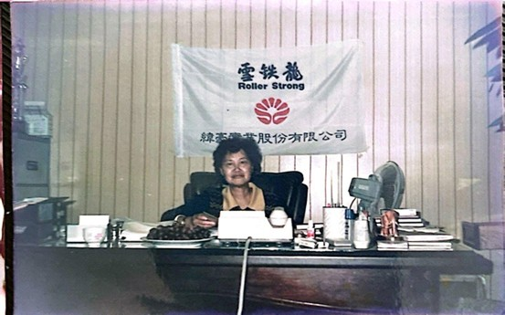
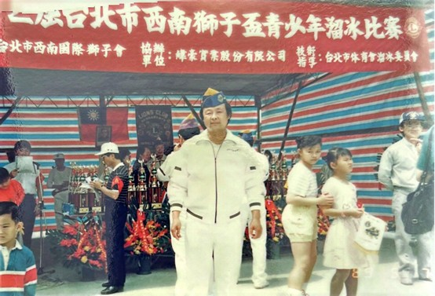
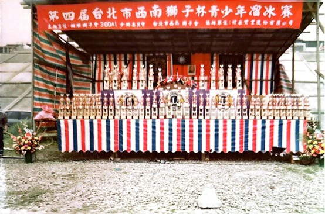
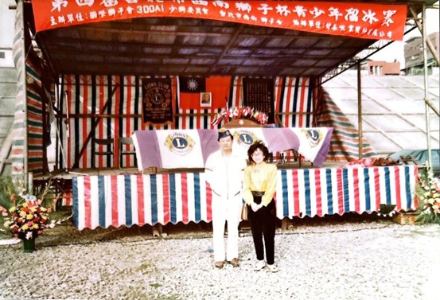

母親曾對紀文豪先生說：「落難米少吃一粒，是不會出脫的。」多年後回想，這句話變成了他面對人生低谷時的支撐。正當他尋找新出路時，四弟的好友陳廷輝主動提議合作。對方有橡膠技術與設備，卻缺乏訂單與業務能力，兩人一拍即合，決定投入當時正流行的溜冰鞋零件市場，新公司「緯豪」因此成立。

紀文豪的母親坐在兒子公司的辦公桌前留影
透過積極拜訪鞋廠與市場需求的精準判斷，煞車頭與配件訂單迅速湧入，緯豪很快成為主要供應商。為掌握更高附加價值，紀文豪先生進一步投入溜冰鞋成品裝配，卻遇上市場急轉直下，歐洲潮流迅速退燒，訂單驟減。面對現實，他當機立斷縮編規模、調整人力，以最低成本撐過低谷。

自一九八五年起，為了提高「雪鐵龍」 的品牌知名度，紀文豪陸續在台北市舉 辦多場溜冰比賽。

第四屆台北市西南獅子盃青少年溜冰賽
他看準內銷市場，創立自有品牌「雪鐵龍」，堅持品質與定價，不走削價競爭。透過寄售方式快速鋪貨，提高能見度，短時間內建立全台銷售網絡，成功打開市場，也讓團隊重新凝聚信心。
事業逐步穩定後，因台灣生產環境惡化，他決定赴中國大陸設廠。歷經探索之後、溝通與風險承擔，最終在深圳建立自有工廠，同步設立美國據點，完成海外布局。這一路的成長，伴隨家庭分離與健康警訊，代價沉重，但也讓他更加確信，唯有在變局中持續前行，才能真正走出自己的路。

比賽結束，獎盃發完了
憑藉著精準的行銷策略與對品質的堅持，「雪鐵龍」溜冰鞋在台灣內銷市場一舉成名，讓紀文豪先生的事業進入了輝煌的成長期。 然而，一九八〇年代末期，台灣社會因「大家樂」賭風盛行而導致生產環境惡化，缺工與管理問題日益嚴重，迫使他思考事業的長久生存之道。為了降低生產風險並掌握核心資源，他果斷決定將產能轉移至中國大陸，透過建立深圳生產基地與積極開拓美國市場，完成了企業轉型與海外佈局的重要跨越。